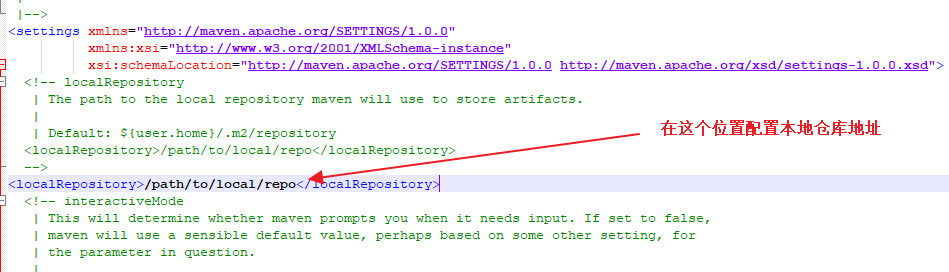
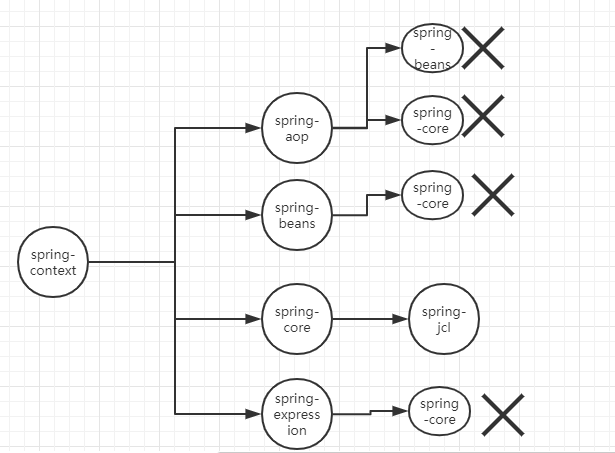
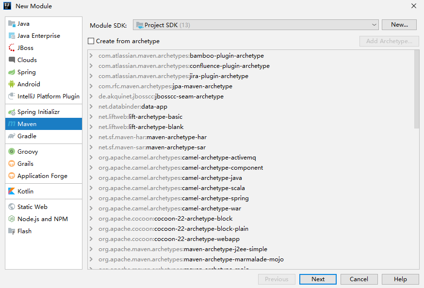

原文连接:https://www.cnblogs.com/lenve/p/12047793.html
1 Maven 介绍
1.1 为什么使用 Maven
由于 Java 的生态非常丰富，无论你想实现什么功能，都能找到对应的工具类，这些工具类都是以 jar 包的形式出现的，例如 Spring，SpringMVC、MyBatis、数据库驱动，等等，都是以 jar 包的形式出现的，jar 包之间会有关联，在使用一个依赖之前，还需要确定这个依赖所依赖的其他依赖，所以，当项目比较大的时候，依赖管理会变得非常麻烦臃肿，这是 Maven 解决的第一个问题。
Maven 还可以处理多模块项目。简单的项目，单模块分包处理即可，如果项目比较复杂，要做成多模块项目，例如一个电商项目有订单模块、会员模块、商品模块、支付模块...，一般来说，多模块项目，每一个模块无法独立运行，要多个模块合在一起，项目才可以运行，这个时候，借助 Maven 工具，可以实现项目的一键打包。
Maven 之前，我们更多的是使用 Ant 的项目构建工具，Ant 有一个特点，每次都得写，每次都写的差不多，配置也臃肿。所以，后来搞出来 Maven。Maven 就是最先进的版本构建工具吗？不是的，只不过，目前在 Java 领域 Maven 使用比较多。除了 Maven，还有 Gradle。
1.2 Maven 是什么
Maven 是一个项目管理工具，它包含了一个项目对象模型（Project Object Model），反映在配置中，就是一个 pom.xml 文件。是一组标准集合，一个项目的生命周期、一个依赖管理系统，另外还包括定义在项目生命周期阶段的插件(plugin)以及目标(goal)。
当我们使用 Maven 的使用，通过一个自定义的项目对象模型，pom.xml 来详细描述我们自己的项目。
Maven 中的有两大核心：
- 依赖管理：对 jar 的统一管理(Maven 提供了一个 Maven 的中央仓库，https://mvnrepository.com/，当我们在项目中添加完依赖之后，Maven 会自动去中央仓库下载相关的依赖，并且解决依赖的依赖问题)
项目构建：对项目进行编译、测试、打包、部署、上传到私服等
2. Maven 安装
Maven 是 Java 项目，因此必须先安装 JDK。
下载 Maven：
- 下载 Maven
下载地址：http://maven.apache.org/download.cgi
- 解压并配置
配置，只需要配置环境变量即可：
首先配置 MAVEN_HOME:
然后配置环境变量：
- 检验安装
如果使用了 IntelliJ IDEA ，可以不用去额外下载 Maven，直接使用 IDEA 中自带的 Maven 插件即可。IntelliJ IDEA 中自带的 Maven 插件在
\ideaIU-2019.2.4.win\plugins\maven\lib\maven3
3. Maven 配置
实际上，没有特殊需求的话，安装好之后直接就可以用了。一般来说，还是需要稍微配置一下，比如中央仓库的问题。默认使用 Maven 自己的中央仓库，使用起来网速比较慢，这个时候，可以通过修改配置文件，将仓库改成国内的镜像仓库，国内仓库使用较多的是阿里巴巴的仓库。
3.1 仓库类型
| 仓库类型 | 说明 |
|---|---|
| 本地仓库 | 就是你自己电脑上的仓库，每个人电脑上都有一个仓库，默认位置在 当前用户名\.m2\repository |
| 私服仓库 | 一般来说是公司内部搭建的 Maven 私服，处于局域网中，访问速度较快，这个仓库中存放的 jar 一般就是公司内部自己开发的 jar |
| 中央仓库 | 有 Apache 团队来维护，包含了大部分的 jar，早期不包含 Oracle 数据库驱动，从 2019 年 8 月开始，包含了 Oracle 驱动 |
现在存在 3 个仓库，那么 jar 包如何查找呢？
3.2 本地仓库配置
本地仓库默认位置在 当前用户名\.m2\repository，这个位置可以自定义，但是不建议大家自定义这个地址，有几个原因：
- 虽然所有的本地的 jar 都放在这个仓库中，但是并不会占用很大的空间。
- 默认的位置比较隐蔽，不容易碰到
技术上来说，当然是可以自定义本地仓库位置的，在 conf/settings.xml 中自定义本地仓库位置：

3.3 远程镜像配置
由于默认的中央仓库下载较慢，因此，也可以将远程仓库地址改为阿里巴巴的仓库地址：
<mirror>
<id>nexus-aliyun</id>
<mirrorOf>central</mirrorOf>
<name>Nexus aliyun</name>
<url>http://maven.aliyun.com/nexus/content/groups/public</url>
</mirror>这段配置，加在 settings.xml 中的 mirrors 节点中：
4. Maven 常用命令
Maven 中有一些常见的命令，如果使用 Eclipse 需要手动敲命令，如果使用 IDEA 的话，可以不用命令，直接点点点就可以了。
| 常用命令 | 中文含义 | 说明 |
|---|---|---|
| mvn clean | 清理 | 这个命令可以用来清理已经编译好的文件 |
| mvn compile | 编译 | 将 Java 代码编译成 Class 文件 |
| mvn test | 测试 | 项目测试 |
| mvn package | 打包 | 根据用户的配置，将项目打成 jar 包或者 war 包 |
| mvn install | 安装 | 手动向本地仓库安装一个 jar |
| mvn deploy | 上传 | 将 jar 上传到私服 |
这里需要注意的是，这些命令都不是独立运行的，它有一个顺序。举个简单例子：
我想将 jar 上传到私服，那么就要构建 jar，就需要执行 package 命令，要打包，当然也需要测试，那就要走 mvn test 命令，要测试就要先编译.....，因此，最终所有的命令都会执行一遍。不过，开发者也可以手动配置不执行某一个命令，这就是跳过。一般来是，除了测试，其他步骤都不建议跳过。
当然，如果开发者使用了 IDEA ，这些命令不用手动敲，点一下就行：
4.1 通过命令来构建项目
可以直接通过命令来构建一个 Maven 项目，不过在实际开发中，一般使用 Eclipse 或者 IDEA 就可以直接创建 Maven 项目了。
创建命令：
mvn archetype:generate -DgroupId=org.javaboy -DartifactId=firstapp -DarchetypeArtifactId=maven-archetype-quickstart -DinteractiveMode=false
看到如下提示，表示项目创建成功：
项目创建成功后，就两个文件：
说明对一个任何一个项目而言，最最核心的就是这两个。
pom.xml 中，则定义了所有的项目配置。
4.2 对项目进行打包
接下来，我们通过 mvn package 命令可以将刚刚创建的项目打成一个 jar 包。
在打包之前，需要配置 JDK 的版本至少为 7 以上，因此，我们还需要手动修改一下 pom.xml 文件，即添加如下配置：
添加完成后，执行打包命令，注意执行所有命令时，命令行要定位到 pom.xml 文件所在的目录，看到如下提示，表示项目打包成功。
4.3 将项目安装到本地仓库
如果需要将项目安装到本地仓库，可以直接执行 mvn install 命令，注意，mvn install 命令会包含上面的 mvn package 过程。
安装到本地仓库之后，这个时候，点开自己的本地仓库，就可以看到相关的 jar 了。
5. IDEA 中使用 Maven
不同于 Eclipse，IDEA 安装完成后，就可以直接使用 Maven 了。
5.1 Maven 相关配置
IDEA 中，Maven 的配置在 File->Settings->Build,Execution,Deployment->Build Tools->Maven:
5.2 JavaSE 工程创建
首先在创建一个工程时，选择 Maven 工程：
如果勾选上 Create from archetype ，则表示可以根据一个项目骨架（项目模板）来创建一个新的工程，不过，如果只是创建 JavaSE 项目，则不用选择项目骨架。直接 Next 即可。然后填入项目的坐标，即 groupId 和 artifactId。
填完之后，直接 Next 即可。这样，我们就会获取一个 JavaSE 工程，项目结构和你用命令创建出来的项目一模一样。
5.3 JavaWeb 工程创建
在 IDEA 中，创建 Maven Web 项目，有两种思路：
- 首先创建一个 JavaSE 项目，然后手动将 JavaSE 项目改造成一个 JavaWeb 项目
- 创建项目时选择项目骨架，骨架就选择 webapp
两种方式中，推荐使用第一种方式。
5.3.1 改造 JavaSE 项目
这种方式，首先创建一个 JavaSE 项目，创建步骤和上面的一致。
项目创建完成后，首先修改 pom.xml ，配置项目的打包格式为 war 包。 这样，IDEA 就知道当前项目是一个 Web 项目：
然后，选中 JavaSE 工程，右键单击，选择 Open Module Settings，或者直接按 F4，然后选择 Web，如下图：
接下来，在 webapp 目录中，添加 web.xml 文件。
注意，一定要修改 web.xml 文件位置：
配置完成后，点击 OK 退出。
项目创建完成后，接下来就是部署了。
部署，首先点击 IDEA 右上角的 Edit Configurations：
然后，配置 Tomcat：
接下来选择 Deployment 选项卡，配置要发布的项目：
最后，点击 IDEA 右上角的三角符号，启动项目。
5.3.2 通过 webapp 骨架直接创建
这种方式比较简单，基本上不需要额外的配置，项目创建完成后，就是一个 web 项目。只需要我们在创建项目时，选择 webapp 骨架即可。
选择骨架之后，后面的步骤和前文一致。
项目创建成功后，只有 webapp 目录，这个时候，自己手动创建 java 和 resources 目录，创建完成后，右键单击，选择 Mark Directory As，将 java 目录标记为 sources root，将 resources 目录标记为 resources root 即可。
凡是在 IDEA 右下角看到了 Enable Auto Import 按钮，一定点一下
6. Maven 依赖管理
Maven 项目，如果需要使用第三方的控件，都是通过依赖管理来完成的。这里用到的一个东西就是 pom.xml 文件，概念叫做项目对象模型（POM，Project Object Model），我们在 pom.xml 中定义了 Maven 项目的形式，所以，pom.xml 相当于是 Maven 项目的一个地图。就类似于 web.xml 文件用来描述三大 web 组件一样。
这个地图中都涉及到哪些东西呢？
6.1 Maven 坐标
<dependencies>
<dependency>
<groupId>junit</groupId>
<artifactId>junit</artifactId>
<version>4.11</version>
<scope>test</scope>
</dependency>
</dependencies>- dependencies
在 dependencies 标签中，添加项目需要的 jar 所对应的 maven 坐标。
- dependency
一个 dependency 标签表示一个坐标
- groupId
团体、公司、组织机构等等的唯一标识。团体标识的约定是它以创建这个项目的组织名称的逆向域名（例如 org.javaboy）开头。一个 Maven 坐标必须要包含 groupId。一些典型的 groupId 如 apache 的 groupId 是 org.apache.
- artifactId
artifactId 相当于在一个组织中项目的唯一标识符。
- version
一个项目的版本。一个项目的话，可能会有多个版本。如果是正在开发的项目，我们可以给版本号加上一个 SNAPSHOT，表示这是一个快照版（新建项目的默认版本号就是快照版）
- scope
表示依赖范围。

我们添加了很多依赖，但是不同依赖的使用范围是不一样的。最典型的有两个，一个是数据库驱动，另一个是单元测试。
数据库驱动，在使用的过程中，我们自己写代码，写的是 JDBC 代码，只有在项目运行时，才需要执行 MySQL 驱动中的代码。所以，MySQL 驱动这个依赖在添加到项目中之后，可以设置它的 scope 为 runtime，编译的时候不生效。
单元测试，只在测试的时候生效，所以可以设置它的 scope 为 test，这样，当项目打包发布时，单元测试的依赖就不会跟着发布。
6.2 依赖冲突
- 依赖冲突产生的原因
在图中，a.jar 依赖 b.jar，同时 a.jar 依赖 d.jar，这个时候，a 和 b、d 的关系是直接依赖的关系，a 和 c 的关系是间接依赖的关系。
6.2.1 冲突解决
- 先定义先使用
- 路径最近原则（直接声明使用）
以 spring-context 为例，下图中 x 表示失效的依赖（优先级低的依赖，即路径近的依赖优先使用）：

上面这两条是默认行为。
我们也可以手动控制。手动控制主要是通过排除依赖来实现，如下：
<dependency>
<groupId>org.springframework</groupId>
<artifactId>spring-context</artifactId>
<version>5.1.9.RELEASE</version>
<exclusions>
<exclusion>
<groupId>org.springframework</groupId>
<artifactId>spring-core</artifactId>
</exclusion>
</exclusions>
</dependency>这个表示从 spring-context 中排除 spring-core 依赖。
7. Maven 私服
Maven 仓库管理也叫 Maven 私服或者代理仓库。使用 Maven 私服有两个目的：
- 私服是一个介于开发者和远程仓库之间的代理
- 私服可以用来部署公司自己的 jar
7.1 Nexus 介绍
Nexus 是一个强大的 Maven 仓库管理工具，使用 Nexus 可以方便的管理内部仓库同时简化外部仓库的访问。官网是：https://www.sonatype.com/
7.2 安装
- 下载
下载地址：https://www.sonatype.com/download-oss-sonatype
- 解压
将下载下来的压缩包，拷贝到一个没有中文的路径下，然后解压。
- 启动
解压之后，打开 cmd 窗口（以管理员身份打开 cmd 窗口），然后定位了 nexus 解压目录，执行 nexus.exe/run 命令启动服务。
这个启动稍微有点慢，大概有 1 两分钟的样子
启动成功后，浏览器输入 http://lcoalhost:8081 打开管理页面。
打开管理页面后，点击右上角上的登录按钮进行登录，默认的用户名/密码是 admin/admin123。当然，用户也可以点击设置按钮，手动配置其他用户。
点击 Repositories 可以查看仓库详细信息：
7.2.1 仓库类型
| 名称 | 说明 |
|---|---|
| proxy | 表示这个仓库是一个远程仓库的代理，最典型的就是代理 Maven 中央仓库 |
| hosted | 宿主仓库，公司自己开发的一些 jar 存放在宿主仓库中，以及一些在 Maven 中央仓库上没有的 jar |
| group | 仓库组，包含代理仓库和宿主仓库 |
| virtual | 虚拟仓库 |
7.2.2 上传 jar
上传 jar，配置两个地方：
- Maven 的 conf/settings.xml 文件配置：
<server>
<id>releases</id>
<username>admin</username>
<password>admin123</password>
</server>
<server>
<id>snapshots</id>
<username>admin</username>
<password>admin123</password>
</server>在要上传 jar 的项目的 pom.xml 文件中，配置上传路径：
<distributionManagement>
<repository>
<id>releases</id>
<url>http://localhost:8081/repository/maven-releases/</url>
</repository>
<snapshotRepository>
<id>snapshots</id>
<url>http://localhost:8081/repository/maven-snapshots/</url>
</snapshotRepository>
</distributionManagement>配置完成后，点击 deploy 按钮，或者执行 mvn deploy 命令就可以将 jar 上传到私服上。
7.2.3 下载私服上的 jar
直接在项目中添加依赖，添加完成后，额外增加私服地址即可：
<repositories>
<repository>
<id>local-repository</id>
<url>http://localhost:8081/repository/maven-public/</url>
<releases>
<enabled>true</enabled>
</releases>
<snapshots>
<enabled>true</enabled>
</snapshots>
</repository>
</repositories>8. 聚合工程
所谓的聚合工程，实际上也就是多模块项目。在一个比较大的互联网项目中，项目需要拆分成多个模块进行开发，比如订单模块、VIP 模块、支付模块、内容管理模块、CMS、CRM 等等。这种拆分方式，实际上更接近于微服务的思想。在一个模块中，还可以继续进行拆分，例如分成 dao、service、controller 等。
有人可能会说，这个分包不就行了吗？
小项目当然可以分包，大项目就没法分包了。比如，在一个大的电商系统中，有一个子模块叫做用户管理、还有一个子模块叫做订单管理，这两个子模块都涉及到用户，像这种情况，我们就需要将用户类单独提取出来，做成单独的模块，供其他模块调用。
8.1 多模块项目展示
|--javaboy-parent
|-- javaboy-cms
|-- javaboy-crm
|-- javaboy-manger
|-- javaboy-manager-model
|-- javaboy-manager-dao
|-- javaboy-manager-service
|-- javaboy-manager-web以 javaboy-manger 为例，javaboy-manager 本身并不提供功能，它只负责管理他自己的子模块，而他的子模块每一个都无法独立运行，需要四个结合在一起，才可以运行。项目打包时，model、dao、service 都将打包成 jar，然后会自动将打包好的 jar 复制到 web 中，再自动将 web 打包成 war 包。
8.2 IDEA 中创建聚合工程
1.创建一个空的 Maven 项目：
项目创建完成后，由于 parent 并不参与业务的实现，只是用来管理它的子模块，因此，src 目录可以将其删除。
2.选中当前工程，右键单击，New->Module
然后继续选择创建一个 Maven 项目：

在 IDEA 中，已经默认指明了当前 Module 的 parent，开发者只需要填入当前 Module 的 artifactId 即可：
javaboy-manager 创建完成后，此时，观察 javaboy-parent 的 pom.xml 文件，发现它自动加上了 packing 属性：
其中，它的 packaging 属性值为 pom，这表示它是一个聚合工程，同时，他还多了 modules 节点，指明了它自己的子模块。
同时，注意 javaboy-manager ，它自身多了一个 parent 节点，这个 parent 节点描述了它的父模块的属性值：
<parent>
<artifactId>javaboy-parent</artifactId>
<groupId>org.javaboy</groupId>
<version>1.0-SNAPSHOT</version>
</parent>这个 parent 不仅仅是一个简单的父子关系描述，它存在继承关系，一般我们可以在 parent 中统一定义依赖或者插件的版本号
3.由于 javaboy-manager 本身也是一个聚合工程，因此，javaboy-manager 的 src 目录也可以删除。
4.选中 javaboy-manager，右键单击，New->Module 创建一个新的 Maven 模块出来。这个步骤类似于第二步，不在赘述。
这里，新的 javaboy-manager-model 创建成功后，我们手动配置它的 packaging 属性值为 jar。
5.依照第 4 步，再分别创建 javaboy-manager-service 以及 javaboy-manager-dao
6.继续创建 javaboy-manager-web 模块，不同于其他模块，web 模块需要打包成 war。web 模块创建可以参考【第五篇文章】。
7.web 工程创建完成后，完善模块之间的继承关系。
javaboy-manager-web 依赖 javaboy-manager-service
javaboy-manager-service 依赖 javaboy-manager-dao
javaboy-manager-dao 依赖 javaboy-manager-model
注意，依赖默认是有传递性的，即在 javaboy-manager-dao 中依赖了 javaboy-manager-model，在 javaboy-manager-service 也能访问到。
配置后的依赖关系如下图：
接下来就可以在不同的模块中写代码，然后进行项目部署了。部署方式参考【第五篇文章】
有一个需要注意的地方，在多模块项目中，web 项目打包需要注意以下问题：
- 不可以直接单独打包
- 如果要打包，有两种方式：
- 第一种就是先手动挨个将 model、dao、service 安装到本地仓库
- 从聚合工程处打包，即从 web 的parent 处打包。